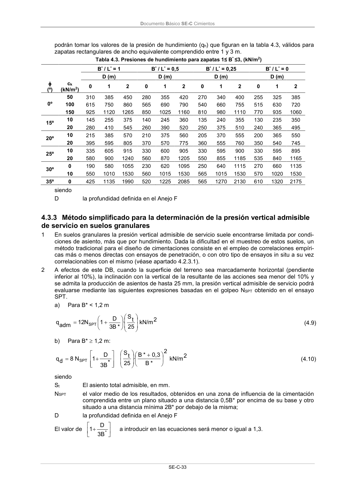

DB-SE-C · Página 38 · versión 2019-12-20
SHA256: a71133f4b0dca253e45ea3071c70f2a512354bcc5cd841bf89b1a502f567ac5e · página física 38 de 165 · métodos de encabezado
solo si están cotejados.
Formatos: Markdown · JSON de bloques · PDF p. 38 · imagen PNG
Documento Básico SE-C Cimientos SE-C-33 podrán tomar los valores de la presión de hundimiento (qh) que figuran en la tabla 4.3, válidos para zapatas rectangulares de ancho equivalente comprendido entre 1 y 3 m. Tabla 4.3. Presiones de hundimiento para zapatas 1≤ B* ≤3, (kN/m2) B* / L* = 1 B* / L* = 0,5 B* / L* = 0,25 B* / L* = 0 D (m) D (m) D (m) D (m) (º) ck (kN/m2) 0 1 2 0 1 2 0 1 2 0 1 2 0º 50 310 385 450 280 355 420 270 340 400 255 325 385 100 615 750 860 565 690 790 540 660 755 515 630 720 150 925 1120 1265 850 1025 1160 810 980 1110 770 935 1060 15º 10 145 255 375 140 245 360 135 240 355 130 235 350 20 280 410 545 260 390 520 250 375 510 240 365 495 20º 10 215 385 570 210 375 560 205 370 555 200 365 550 20 395 595 805 370 570 775 360 555 760 350 540 745 25º 10 335 605 915 330 600 905 330 595 900 330 595 895 20 580 900 1240 560 870 1205 550 855 1185 535 840 1165 30º 0 190 580 1055 230 620 1095 250 640 1115 270 660 1135 10 550 1010 1530 560 1015 1530 565 1015 1530 570 1020 1530 35º 0 425 1135 1990 520 1225 2085 565 1270 2130 610 1320 2175 siendo D la profundidad definida en el Anejo F 4.3.3 Método simplificado para la determinación de la presión vertical admisible de servicio en suelos granulares 1 En suelos granulares la presión vertical admisible de servicio suele encontrarse limitada por condi- ciones de asiento, más que por hundimiento. Dada la dificultad en el muestreo de estos suelos, un método tradicional para el diseño de cimentaciones consiste en el empleo de correlaciones empíri- cas más o menos directas con ensayos de penetración, o con otro tipo de ensayos in situ a su vez correlacionables con el mismo (véase apartado 4.2.3.1). 2 A efectos de este DB, cuando la superficie del terreno sea marcadamente horizontal (pendiente inferior al 10%), la inclinación con la vertical de la resultante de las acciones sea menor del 10% y se admita la producción de asientos de hasta 25 mm, la presión vertical admisible de servicio podrá evaluarse mediante las siguientes expresiones basadas en el golpeo NSPT obtenido en el ensayo SPT. a) Para B* < 1,2 m 2 kN/m 25 t S · * B 3 D 1 N 12 adm q SPT (4.9) b) Para B* 1,2 m: 2 kN/m 2 * B 0,3 * B · 25 t S * 3B D 1 N 8 d q SPT (4.10) siendo St El asiento total admisible, en mm. NSPT el valor medio de los resultados, obtenidos en una zona de influencia de la cimentación comprendida entre un plano situado a una distancia 0,5B* por encima de su base y otro situado a una distancia mínima 2B* por debajo de la misma; D la profundidad definida en el Anejo F El valor de * B 3 D 1 a introducir en las ecuaciones será menor o igual a 1,3.
